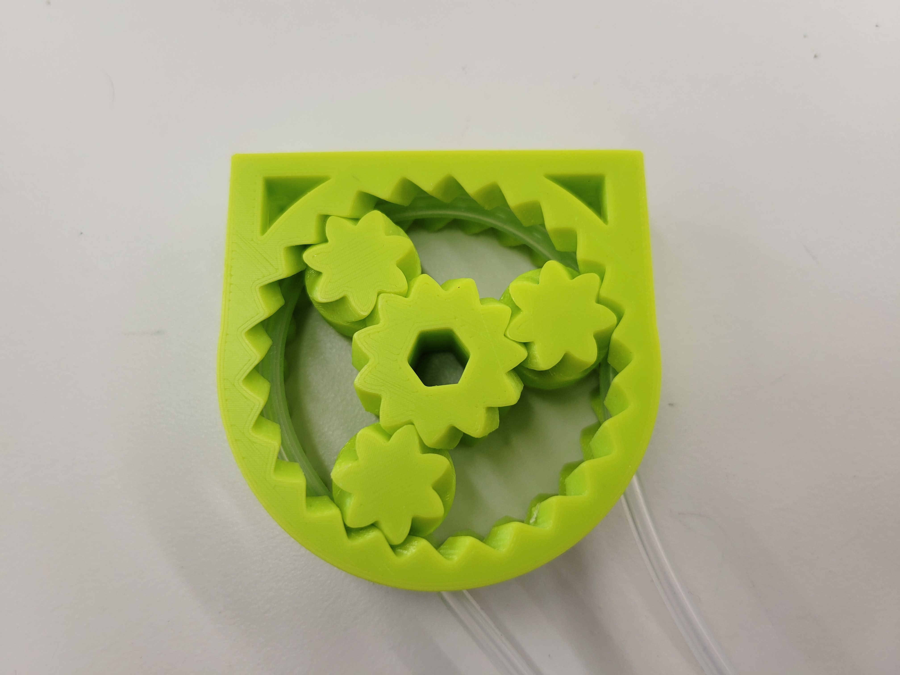
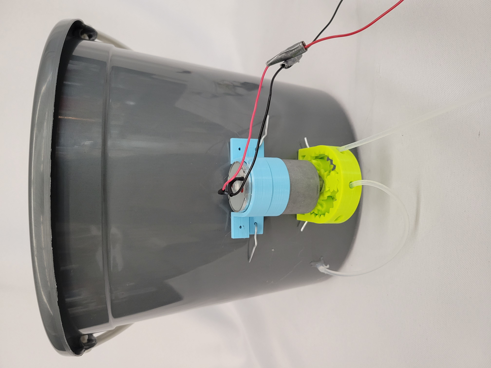
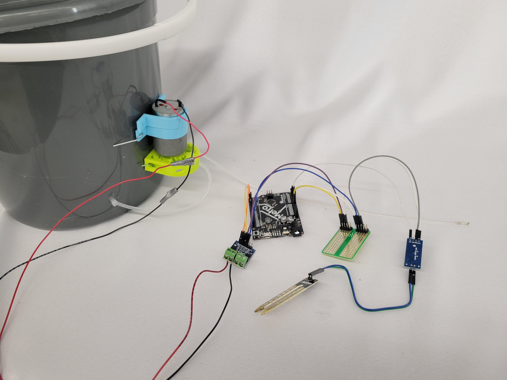
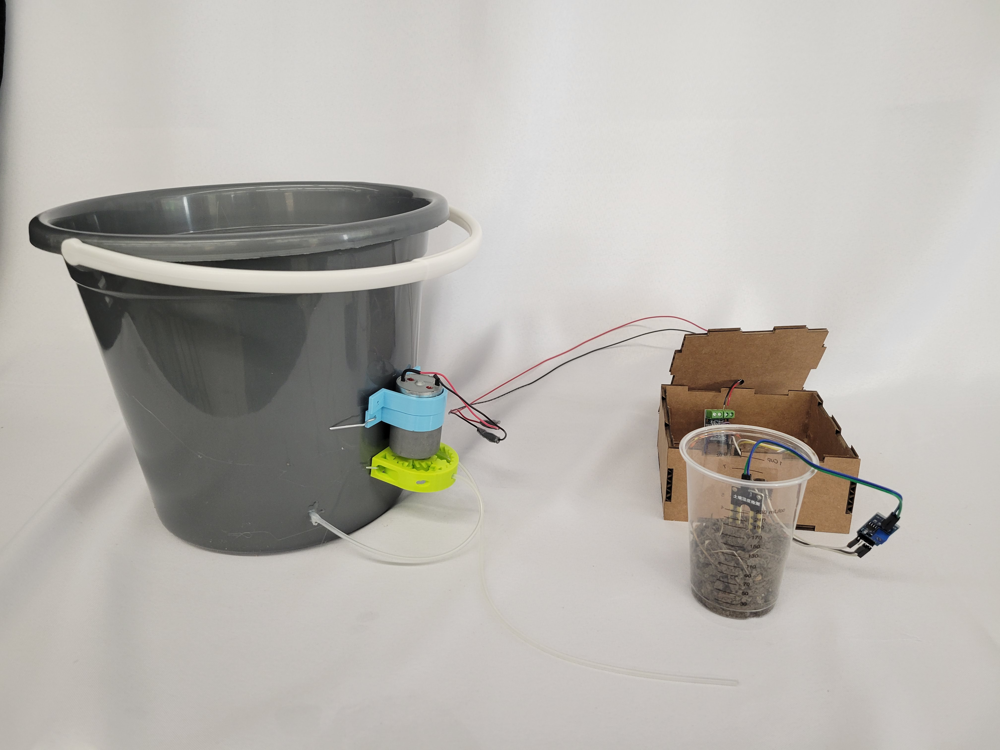
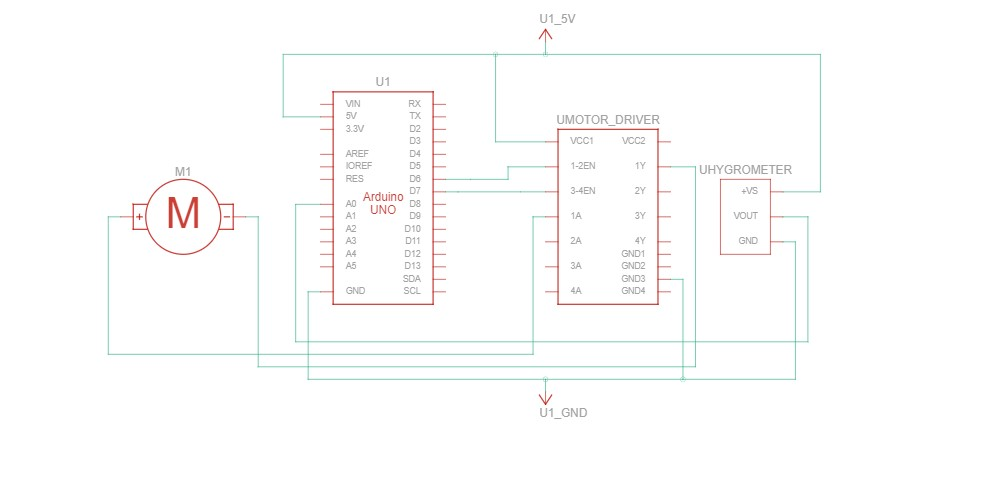

<div class="container-fluid">
### Final Project
#### [Demo video here](https://youtu.be/ZdYzkAV3eIo)
#### About the project
I'm from the beautiful city of Las Vegas, and like many other cities in the Southwest, Las Vegas has a water problem. Because of a twenty-year-long megadrought and about a century of irresponsible consumption, water has become increasingly scarce in the region. This "slow-motion apocalypse" is largely driven by one sector - agriculture. Some 70% of the water in the Southwest is used by farmers and ranchers in California and Arizona, in regions where such inefficient irrigation methods like flood irrigation still predominate.
My idea was to create an automated and water-efficient irrigation system that would detect soil humidity to minimize water wastage. In order to make this an actually useful system, I set two additional goals: this irrigation system should be portable, modular, and use relatively simple fabrication techniques in order to enhance reproducibility. Ideally the total system would cost under thirty dollars.
#### The design
My design relies on peristaltic pumps, which are small low-energy pumps that transfer water without needing impellers. In a peristaltic pump, a flexible tube is pressed against a hard track by a set of rollers. The rollers pinch the tube, creating several segments that are watertight. The rollers then force the water-filled segments to move, transferring water and creating a pressure gradient that further primes the pump. I used a peristaltic pump from Thingiverse for this project, which you can find [here](https://www.thingiverse.com/thing:1696019/files).

This pump has to be driven by a motor, and I selected an [Adafruit large-core DC geared motor](https://www.adafruit.com/product/4416).
These pumps must draw water from a reservoir, and in order to make this project easily reproducible, I looked for something off-the-shelf. To that end, I bought a bucket from a nearby hardware store.
I then had to attach my peristaltic pump and motor to the bucket. I did this by drilling two small holes in the bucket, threading these holes with stiff picture wire to hold the pump in place.
However, this left the motor unattached. I decided to design a gasket which would hold the motor in place. The STL file can be found [here](./project_img/gasket.stl).
Once two gaskets were printed, I attached them similarly using picture wire, fixing the motor in place.
Finally, I drilled another hole in the bucket and inserted one end of the pump's tubing into the hole, allowing the pump to draw water from the bucket.

The second part of this assemblage is the electronics, including the wiring for the motor as well as the humidity sensor. I ran this project using an Arduino Metro. I began by wiring a protoboard and attaching it to the Metro. I then found a [two-way screw-in motor driver](https://www.amazon.com/KOOBOOK-Channels-Stepper-Controller-Arduino/dp/B07S98QQYL/ref=asc_df_B07S98QQYL/?tag=hyprod-20&linkCode=df0&hvadid=385215532707&hvpos=&hvnetw=g&hvrand=4679315442856860831&hvpone=&hvptwo=&hvqmt=&hvdev=c&hvdvcmdl=&hvlocint=&hvlocphy=9002000&hvtargid=pla-830907296301&psc=1&tag=&ref=&adgrpid=73789134890&hvpone=&hvptwo=&hvadid=385215532707&hvpos=&hvnetw=g&hvrand=4679315442856860831&hvqmt=&hvdev=c&hvdvcmdl=&hvlocint=&hvlocphy=9002000&hvtargid=pla-830907296301) to drive the DC motor. Finally, I selected a [soil hygrometer](https://www.amazon.com/KeeYees-Sensitivity-Moisture-Watering-Manager/dp/B07QXZC8TQ/ref=asc_df_B07QXZC8TQ/?tag=hyprod-20&linkCode=df0&hvadid=343238573411&hvpos=&hvnetw=g&hvrand=3452524098276004256&hvpone=&hvptwo=&hvqmt=&hvdev=c&hvdvcmdl=&hvlocint=&hvlocphy=9002000&hvtargid=pla-757549749596&psc=1&tag=&ref=&adgrpid=71762478951&hvpone=&hvptwo=&hvadid=343238573411&hvpos=&hvnetw=g&hvrand=3452524098276004256&hvqmt=&hvdev=c&hvdvcmdl=&hvlocint=&hvlocphy=9002000&hvtargid=pla-757549749596) that comes with a driver.
I connected the motor and hygrometer to the Uno and then placed all the electronic components in a laser-cut cardboard box.


Below is a circuit diagram of the electronics.

Overall, the average cost of all the components used was approximately $40, somewhat over my initial goal of $30, but still reasonable.
### The code
I used the principle of Arduino multitasking to write a program that initializes a hygrometer as an instance of a Hygrometer class. This hygrometer object receives humidity data from the pin that the physical hygrometer is attached to. This data is then referenced every 30 seconds, and if the humidity is below a "dry" threshold, the motor spins for 10 seconds, watering the soil.
```
const int A1A = 6; // define pin 6 for A-1A
const int A1B = 7; // define pin 7 for A-1B
class Hygrometer
{
// Class Member Variables
// These are initialized at startup
int Pin; // the number of the hygrometer pin
// These maintain the current state
int humidity; // humidity as measured by hygrometer
unsigned long previousMillis; // will store last time millis was updated
long OnTime;
// Constructor - creates a Hygrometer
// and initializes the member variables and state
public:
Hygrometer(int pin, long initTime)
{
Pin = pin;
OnTime = initTime;
pinMode(Pin, INPUT);
humidity = analogRead(Pin);
previousMillis = 0;
}
void Update()
{
unsigned long currentMillis = millis();
humidity = analogRead(Pin);
if((humidity >= 550) && !(humidity <= 200) && (currentMillis - previousMillis >= OnTime))
{
digitalWrite(A1A, HIGH);
digitalWrite(A1B, LOW);
delay(5000);
Serial.println("Driving!");
digitalWrite(A1A, LOW);
digitalWrite(A1B, LOW);
}
}
int getHumidity()
{
return humidity;
}
};
Hygrometer hygro(A0,30000);
void setup()
{
Serial.begin(9600);
pinMode(A1A, OUTPUT); // specify these pins as outputs
pinMode(A1B, OUTPUT);
digitalWrite(A1A, LOW); // start with the motors off
digitalWrite(A1B, LOW);
}
void loop()
{
hygro.Update();
Serial.println(hygro.getHumidity());
}
```
### Project evolution
I faced a number of roadblocks in this project, mainly relating to the connection between the motor and the peristaltic pump. Initially, I had planned to use yellow hobby motors to drive the system, and I had designed custom couplings to connect these yellow motors to the pump. I also designed pump housings to hold the motor-pump assemblages. However, I soon realized that these motors were insufficiently powerful to drive the system, and all three motors I attempted to use broke. This necessitated a large-scale revision in my project design, involving using a larger motor and attaching it to the reservoir itself.